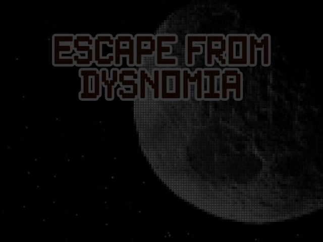

Home
Bienvenidos a mi portafolio!

Esta página ha sido diseñada con el propósito de ofrecerle la oportunidad de conocerme tanto en el ámbito personal como profesional.
Cualquier consulta que desee realizarme, visite la sección de contacto.
Si quiere ver más proyectos hechos por mi, visite la sección de mis proyectos.
Sobre mi
¿Quien soy?
Mi principal fortaleza
Mi principal debilidad
Mis objetivos o metas actuales a cumplir
- Primero y principal: conseguir mi primer trabajo para independizarme por completo y vivir mi vida
- Segundo: comprarme una buena computadora gamer para empezar a realizar streaming en youtube o twitch
- Tercero: seguir escribiendo mi historia de ficción con el fin de que algún día se vuelva conocida y tenga muchos seguidores


Perfil profesional
Estudios
Escuela N3 de Rosario
Liceo AUIC de Rosario
Universidad CLAEH
CoderHouse
Henry
Experiencias laborales
Brokerware
Contacto
Para contactarme:
 Telefono: 091224397
Telefono: 091224397
 Gmail: jorcintomas@gmail.com
Gmail: jorcintomas@gmail.com
 LinkedIn: Tomás Jorcin
LinkedIn: Tomás Jorcin
 Twitter/X: @JorcinTomas
Twitter/X: @JorcinTomas
 Mi CV
Mi CV
Mis proyectos
Proyectos

Meat delivery
(Maqueta de una pagina web)
Tencologías Utilizadas: Visual Studio Code, HTML, CSS, SCSS

Sala de juegos
(Solo exclusivo para pc)
Tencologías Utilizadas: Visual Studio Code, HTML, CSS, JavaScript

Escape from Dysnomia
(Videojuego subido en itch.io)
Tencologías Utilizadas: Microsoft Visual Studio 2019, Unity, C#
Escape from Dysnomia
(Videojuego subido en itch.io)
Tencologías Utilizadas: Microsoft Visual Studio 2019, Unity, C#

Proyecto Final-PetPalace
(E-commerce)
Tencologías Utilizadas: Visual Studio Code, HTML, CSS, JavaScript,
PostgreSQL, Express, Sequelize, Node.js, Render, Vercel, Stripe,
React.js, Redux, Nodemailer, Email.js, Tailwind